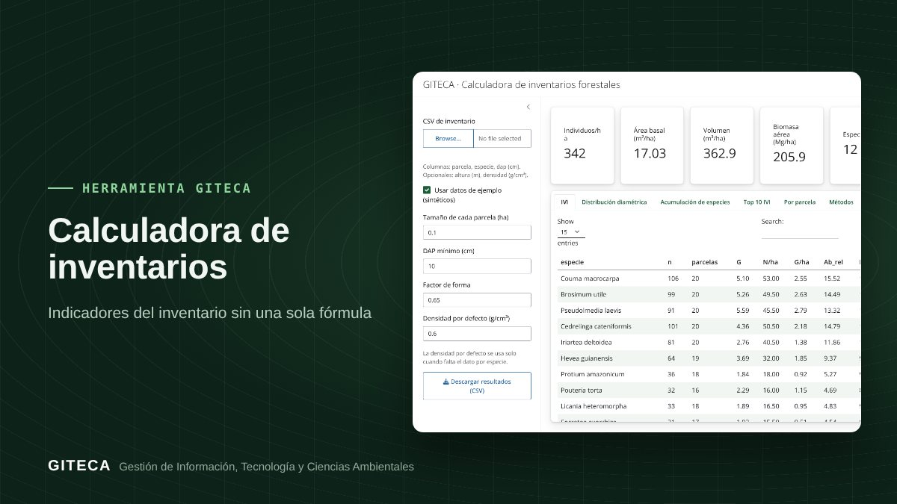

Del CSV de tu inventario al IVI, volumen y biomasa en un clic
Sube el inventario en CSV y obtén N/ha, área basal, volumen, IVI, diversidad, curva de acumulación y biomasa aérea, sin fórmulas en Excel.

¿Sigues armando tablas dinámicas para calcular el IVI y el volumen de cada inventario?
Cada inventario forestal termina en los mismos indicadores: abundancia, área basal, volumen, importancia ecológica, diversidad y biomasa. La Calculadora de inventarios los obtiene a partir de un CSV y muestra cada resultado en tablas y gráficos listos para el informe.
Antes y ahora
- Ordenar los datos y armar tablas dinámicas por especie y parcela.
- Escribir las fórmulas de N/ha, G/ha, volumen, IVI, Shannon y Simpson.
- Buscar la densidad básica de cada especie para estimar la biomasa.
- Rehacer todo si cambia el tamaño de parcela o el DAP mínimo.
- Subes el CSV (especie, parcela, DAP, altura y, si la tienes, densidad).
- Indicas el tamaño de parcela, el DAP mínimo y el factor de forma.
- La app completa la densidad que falta con la biblioteca de coeficientes de la UNAP.
- Revisas las tablas y gráficos, y descargas los resultados en CSV.
Tiempos de referencia estimados por el equipo GITECA; varían según el tamaño del área y la experiencia del usuario.
En la práctica: Con los datos de ejemplo (sintéticos), la app muestra 342 individuos/ha, 17,03 m²/ha de área basal, 362,9 m³/ha de volumen y 205,9 Mg/ha de biomasa aérea.
Qué hace
- N/ha, G/ha y volumen por especie y parcela.
- Índice de Valor de Importancia (IVI), Shannon y Simpson.
- Distribución diamétrica y curva de acumulación de especies.
- Biomasa aérea con la ecuación de Chave et al. (2014).
Para quién es
Empieza en 3 pasos
- Abre la app (la primera carga tarda 1 a 2 minutos).
- Sube tu CSV o activa los datos de ejemplo.
- Ajusta los parámetros y descarga los resultados.